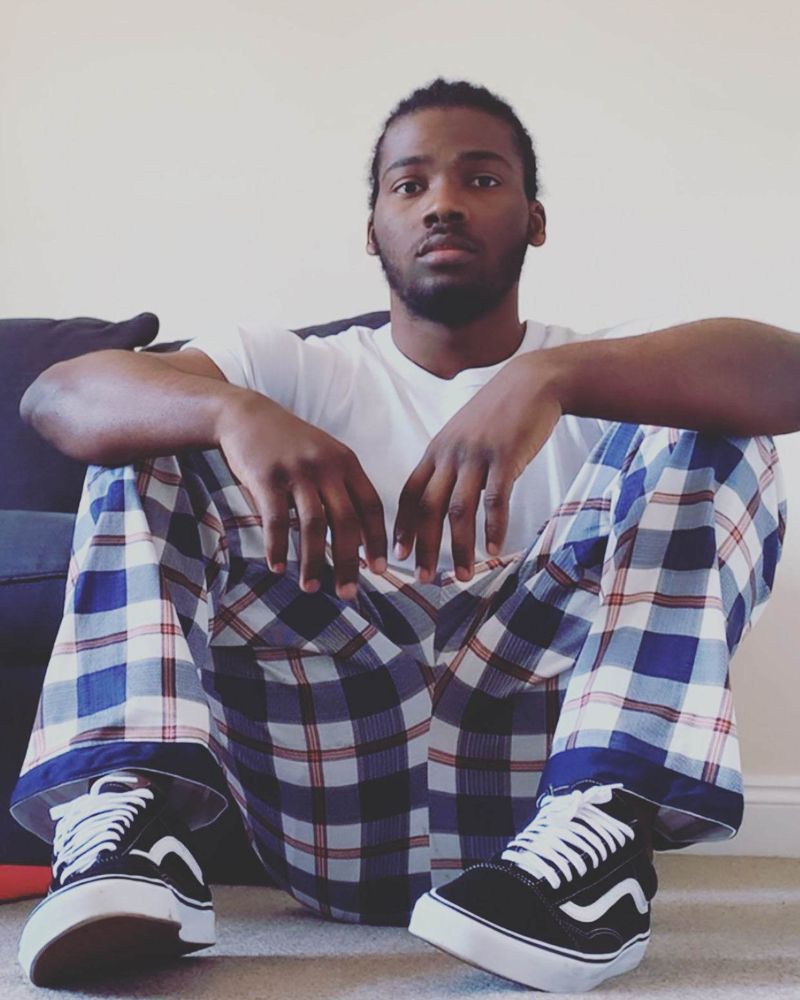

My journey has been shaped by resilience, curiosity, and a deep desire to build stability through technology, creativity, and community. I’ve moved through different environments, languages, and responsibilities — each one teaching me how to adapt, grow, and stay grounded.
Today, I’m building a life that feels intentional. I’m learning new skills, creating digital experiences, and finding ways to contribute to the world around me.
This space is where I share that journey — not as someone who has everything figured out, but as someone who keeps moving forward.
